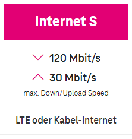

Guten Abend.
Habe ein meinem Standort technisch und physisch nichts geändert und heute den alten UPC Tarif meiner Eltern mit 250mbit welche so gut wie immer angekommen sind auf INTERNET S ändern lassen!
Nur sind wir weit von den MAX Werten von 120mbit entfernt.
Ich verstehe schon das dies MAX Werte sind und je nach Leitung und Standort anders sein kann und sich Magenta mit den im Vertrag MIN / MAX / Gewöhnliche Bandbreite rechtlich absichern möchte.
Aber ich dachte da die letzten Jahre immer auch die MAX Bandbreite oder sagen wir bis auf 10% darunter erreicht wurden ist ein Internet Tarif S völlig ausreichend!
Heute gleich nach der Vetragsumstellung dann der Schock:
Der Download beträgt NUR mehr max 75mbit (!)
Sind wird jetzt im Mangenta Netz aufgrund des günstigen Tarifes schlechter priorisiert? Am Telefon hat man mir dazu nämlich nichts gesagt.
Bearbeitet von ichbinesAm 18.1.2024 um 18:08 schrieb ichbines:Nur sind wir weit von den MAX Werten von 120mbit entfernt.
Hallo,
die Antwort auf Ihre Frage ist leider nicht ganz einfach. Es gibt mehrere Faktoren, die die tatsächliche Internetgeschwindigkeit beeinflussen können. Zunächst einmal ist es wichtig zu wissen, dass die maximale Downloadgeschwindigkeit von 120 Mbit/s im Tarif Internet S korrekt ist.

Diese Geschwindigkeit wird jedoch nur unter idealen Bedingungen erreicht, d. h. wenn die Leitung nicht durch andere Nutzer belastet ist und die Endgeräte die Geschwindigkeit auch unterstützen. In der Praxis ist es daher durchaus möglich, dass die tatsächliche Geschwindigkeit unter 120 Mbit/s liegt. Dies kann verschiedene Gründe haben, z. B.:
- Die Leitung wird durch andere Nutzer oder Geräte belastet. Dadurch teilt sich die Bandbreite auf
- Die Endgeräte unterstützen die Geschwindigkeit nicht.
- Es gibt technische Probleme in der Infrastruktur von Magenta (hier zu erfahren: https://www.magenta.at/stoerungsabfrage/ )
Wenn du die tatsächliche Geschwindigkeit überprüfen möchtest, kannst du dies mit einem Speedtest tun. Es gibt verschiedene Anbieter von Speedtests, z. B. https://www.magenta.at/internet/speedtest
Wenn du den Speedtest durchführst und die tatsächliche Geschwindigkeit deutlich unter der maximalen Geschwindigkeit von 120 Mbit/s liegt, solltest du dich an den Kundenservice von Magenta wenden -> 0676 200 7777. Dieser kann prüfen, ob es technische Probleme gibt, die die Geschwindigkeit beeinträchtigen.
Zur Frage der Priorisierung kann ich dir mitteilen, dass mir eine solche bei Kabel-Anschlüssen nicht bekannt ist.
Ich hoffe, diese Informationen sind hilfreich.
LG JD.
Ja das Kabel Internet ein shared medium ist war mir ja schon klar.
Wie aber beschrieben sind bei dem "alten" Tarif quasi immer 90 -100% angekommen.
Wieso aber jetzt nicht mehr?
Somit sollten Ja jetzt auch so 100 - 110mbit ankommen!
Am 19.1.2024 um 11:28 schrieb ichbines:Somit sollten Ja jetzt auch so 100 - 110mbit ankommen!
Starte am besten einmal dein Modem neu - nimm es dazu für 2-3 Minuten vom Strom.
Mache dann einen Speedtest via Kabel (LAN) - am besten zu verschiedenen Tageszeiten (morgens, mittags, abends). Achte darauf, dass keine anderen Geräte aufs Internet zugreifen.
Teile dann die Ergebnisse hier. Bin gespannt was rauskommt.
LG JD.